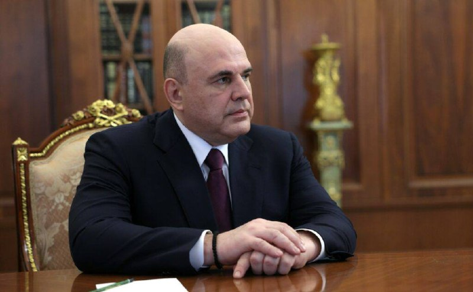

Топор Live
@toporlive
Топор Live
@toporlive
Мишустин утвердил новое распределение обязанностей между вице-премьерами правительства России.

⚡️Мишустин утвердил новое распределение обязанностей между вице-премьерами правительства России.
Изменения затронули финансовый блок, транспорт, промышленность, цифровое развитие и реализацию национальных проектов.
Изменения затронули финансовый блок, транспорт, промышленность, цифровое развитие и реализацию национальных проектов.
— Денис Мантуров - промышленная автоматизация, космическая деятельность, новые материалы и технологии, маркировка товаров;
— Татьяна Голикова - нацпроекты в сфере здравоохранения, поддержки семей и кадровой политики;
— Олег Кожемяко - развитие Дальнего Востока и Арктики, инвестиционная привлекательность регионов и работа Минвостокразвития;
— Андрей Никитин - транспортная инфраструктура, беспилотные авиационные системы, развитие транспортной сети и работа Минтранса;
— Александр Новак - платформенная экономика, производительность труда, энергетические и атомные технологии;
— Дмитрий Патрушев - экологическое благополучие и продовольственная безопасность;
— Ирина Окладникова - руководство аппаратом правительства, контроль исполнения поручений президента, реализация нацпроектов и эффективность бюджетных расходов;
— Антон Силуанов - финансовый блок, бюджетная и налоговая политика, государственный долг, финансовые рынки и государственные закупки;
— Марат Хуснуллин - инфраструктурное развитие, жилищно-коммунальное хозяйство и управление государственной собственностью в новых регионах;
— Дмитрий Чернышенко - цифровая трансформация, искусственный интеллект, связь, молодежная политика, туризм и образование;
— Алексей Оверчук - евразийская интеграция и сотрудничество в рамках ЕАЭС, СНГ и Союзного государства. Его полномочия остались без изменений.